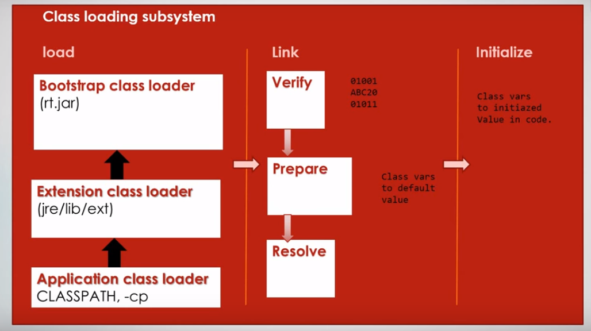

JVM has three components
Class loader subsystem is responsible to load and initialize the .class files. This class loader subsytem has three phases
Loads the bytecode to the memory.It loads all the classes from classpath and classes that are required to execute like rt.jar and some .class files from jre/lib/ext.
Link phase again has three phases
Verifies the bytecode.
Allocates memory for the class level variables and assignes default values.
For example:
public static boolean isTrue = true;
//In this phase memory will be allocated to isTrue and assigns with default value false
Finds any symbolic references in the code and resolves. (like references to other class or constant pool)
Initializes the class level variables with actual values. For the above isTrue variable assigns to the actual value true
Runtime Data Area classified into 5 types